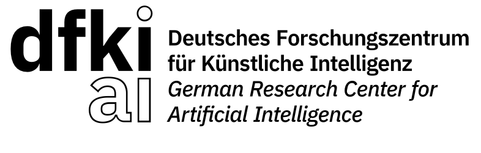

CeMOS – Research and Transfer Center, TH Mannheim, Germany
Jan 2025 – Oct 2025
Applied AI Scientist
Tensorlake, USA (Remote)
Focused on document intelligence and computer vision research.
Trained models for generating document layout data and implemented advanced post-processing pipelines to improve layout consistency and OCR accuracy.
Developed a strikethrough detection pipeline, from data creation through model training to automatic strikethrough removal prior to OCR, improving text recognition precision.
Led VLM integration for document analysis, defining a JSON annotation schema and benchmarking Azure Document Intelligence, Amazon Textract, Google Gemini, and DotsOCR for accuracy and latency.

Oct 2021 – Dec 2025
PhD Researcher
German Research Center for Artificial Intelligence (DFKI), Kaiserslautern, Germany
Led research on semi-supervised object detection for challenging 2D environments under the BMBF project.
Designed and deployed a vision-guided multimodal pipeline for document layout analysis under the LUMINOUS project, achieving approximately 98% precision.
Developed computer vision–based medical anomaly detection systems under the AIRISE project, ensuring compliance with medical standards while reducing annotation and processing time by 70%.
Supervised Master's students in research on semi-supervised, unsupervised, and multimodal learning.